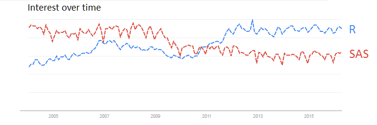
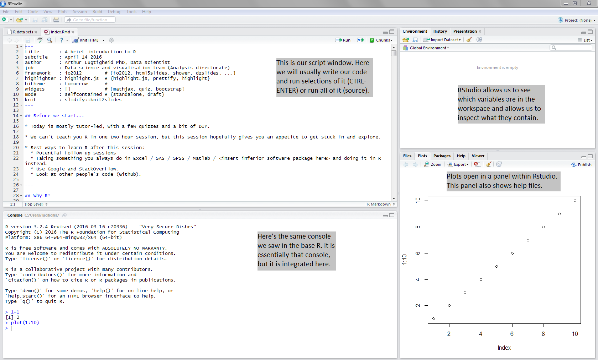
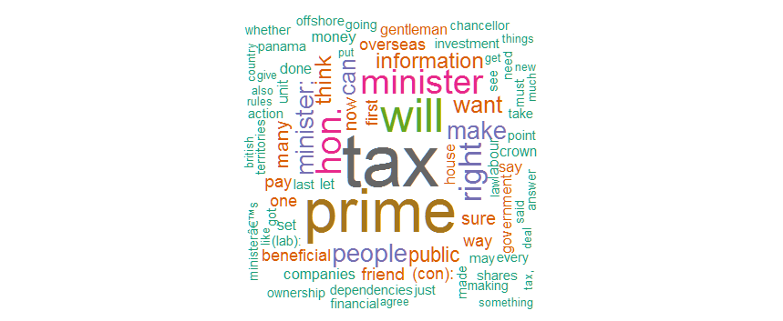
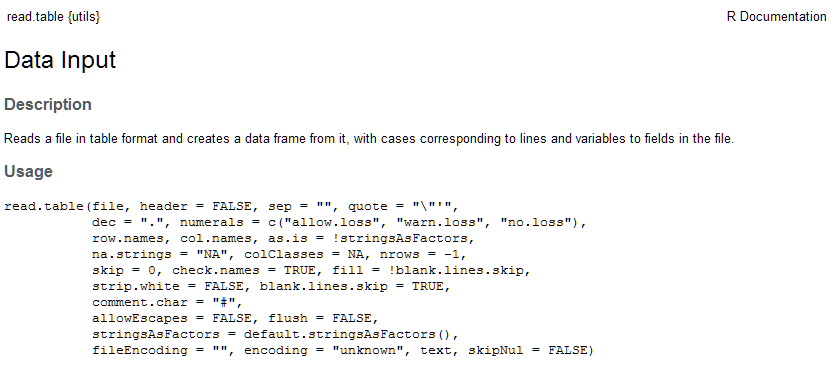
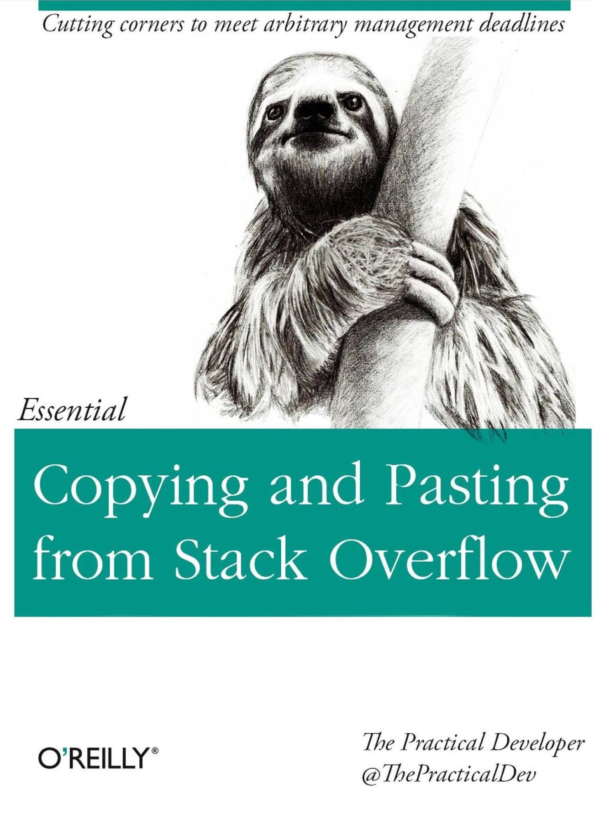
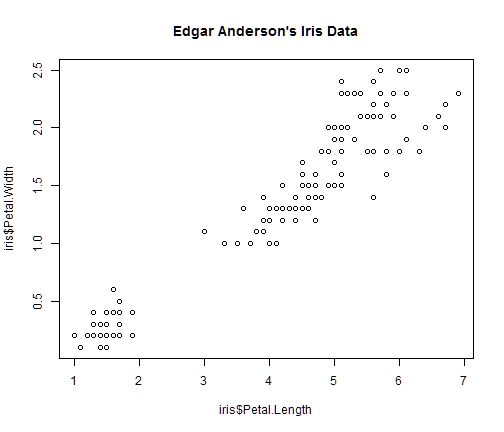
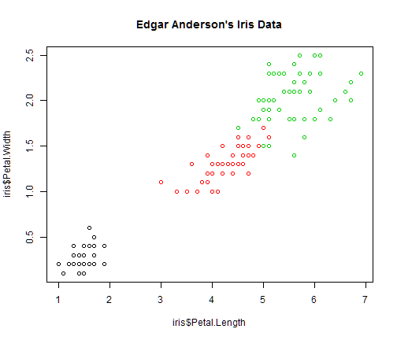
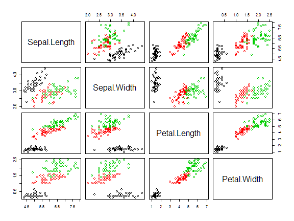
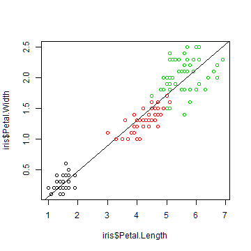
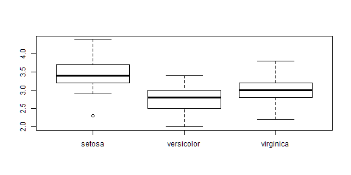

Today is mostly tutor-led, with a few quizzes and a bit of DIY.
We can't teach you R in one two hour session, but this session hopefully gives you an appetite to get stuck in and explore.
Best ways to learn R after this session:
- Potential follow up sessions
- Taking something you always do in Excel / SAS / SPSS / Matlab /
and doing it in R instead. - Use Google and StackOverflow.
- Look at other people's code (Github).
A brief introduction to R
April 14 2016
Arthur Lugtigheid PhD, Data scientist
Data science and visualisation team (Analysis directorate)
Before we start...
Why R?
- R is free ("free" as in "free speech", not as in "free beer").
- It is currently the #1 statistical programming language.
- R is the future, guys, according to Google trends:

- Unlike Fight Club, the first rule of R is "Do talk about R!"
- Unparalelled graphics and data visualisation.

Good luck making something like this in SAS / SPSS / Excel / Matlab!
Today's outline
Introduction
- The R programming environment, packages, help
Basic R
- Programming style, vectors, matrices and data.frames
Managing data
- The workspace, importing and exporting data
Getting our hands dirty
- Brief introduction to analysing the iris data set.
Introduction
In this section we're going to take our first steps into the R-verse.
- The R programming environment
- Installing and using packages
- Getting help in R and online
The R programming environment
R is a programming language. To do anything in it, you have to write code.
We type our code in the R console, which interprets and runs the commands.
1+1
## [1] 2
1+
1
## [1] 2
We usually don't develop in the console though - we use RStudio.
(NB: In the actual tutorial, the next two slides are a demo.)
Base R console

RStudio

Installing and using packages
One of the strengths of R is that there are literally thousands of packages available for you to extend the core capabilities of the R statistical environment.
# This installs the wordcloud package from CRAN
install.packages('wordcloud')
Then to use the package, you have to load it through the library command:
library(wordcloud)
wordcloud(
panama, # this is data I mined from the common's hansard records
scale=c(5,0.5),
max.words=100,
random.order=FALSE,
rot.per=0.35,
use.r.layout=FALSE,
colors=brewer.pal(8, 'Dark2')
)
Installing and using packages (Cont.)
And here are the 100 most used words in the House of Commons debate on the Panama papers (Mon 14 April 2016) represented as a word cloud:

Getting help
Every function has a help function with syntax and examples:
?read.csv

Helping yourself
There is a plethora of general help books available:


Helping yourself
If that doesn't work:

Quiz
Why do we like R?
What is the name of the repository where R packages live?
How do we install packages in R?
Where do we go for help on R?
Basic R
- A brief style guide
- Numbers, strings, Vectors, matrices
- Data frames
- Loading data
A brief style guide
Rule 1: always comment everything you do.
1+1 # here's a comment
Rule 2: Choose sensible names for variables, no reserved words
# this is a reserved word, a word that is part of R syntax
with <- 2
# bad
howdoyoulikereadinglongvariablenameswithoutspaces <- 1
ai <- 27000
# invalid
spaced out variable <- 1
5experiment <- 0
# good
annual.income <- 27000
A brief style guide (Cont.)
Rule 3: use proper indentation
# readable
plot(
x = x,
y = y,
type = "l",
col = "black"
)
# Not very readable
plot(x=x,y=y,type="l",col="black")
A brief style guide (Cont.)
Rule 4: When we call a function, we usually use the keywords for clarity.
seq(
from = 1,
to = 10,
by = 1
)
## [1] 1 2 3 4 5 6 7 8 9 10
We don't have to use keywords - this is called lazy loading.
seq(1, 10, 1)
Generally, using keywords increases readability of code.
More guidance: https://github.com/hadley/devtools/wiki/Style
Quiz
- What's wrong with this code?
a <- 1:10; bkl <- mean(a[3:9]); ij = 1;
fishintheriver = ts.intersect(rec, soiL6=lag(soi,-6), dframe=TRUE)
summary(fit <- lm(rec~soiL6, data=fishintheriver, NULL))
plot(fish$rec); lines(fitted(fit), col=2)
- Which (if any) of the following variable names is/are valid?
thisone <- 1
THISONE <- 2
this.one <- 3
This.1 <- 4
THIS.......on...e <- 5
This!One! <- 6
lkasdfoiu <- 7
Everything in R is an Object!
All the data, the analyses, and even plots you use and create are, or can be, objects; an object can be a combination of variables, functions, and data structures.
# You assign a new object with <-
a <- 1 # also: 1 -> a
To change the value of an object you have to reasign it
a + 1 # we increment a by one
a # what's the value of a?
a == 1 # we can also test whether object a is still 1
Numbers and strings (scalars)
The simplest object type in R is a scalar. A scalar object is just a single value like a number or a name. We already defined several scaler objects. Here are examples of numeric scalars:
a <- 100
b <- 3 / 100
Scalars don't have to be numeric, they can also be characters (also known as strings).
d <- "Sheffield"
e <- "Department for Business, Innovation and Skills"
f <- "1"
# what is the result of this?
f + 1
Vectors
A vector object is just a combination of several scalars stored as a single object.
# let's create a vector called 'vec'
vec <- c(4, 8, 15, 16, 23, 42)
char.vec <- c('Ceci', 'N\'est', 'pas', 'une', 'pipe')
To select elements from a vector, we use indices:
# the second element in vec
vec[2]
# the second to fourth element of vec
vec[2:4]
# the second element of the char.vec
char.vec[2]
Vectors
Logical indexing is a powerful way to select elements.
# let's create a vector called 'num'
num <- seq(3,19,3)
num < 5 # we call this a boolean vector
## [1] TRUE FALSE FALSE FALSE FALSE FALSE
num > 10
## [1] FALSE FALSE FALSE TRUE TRUE TRUE
filter <- num > 10
num[filter]
## [1] 12 15 18
Quiz
Given vector vec:
vec <- c(4, 8, 15, 16, 23, 42)
What do these commands do?
vec[c(1,3,5)]
vec[-1]
vec[-3:-5]
vec[length(vec)]
vec[vec > 15]
new.vec <- c('k', 1, 'b', 2)
Vector functions
a <- 1:5
b = seq(
from=1,
to=10,
by=1)
# what do these contain?
ab.sum = a+b
ab.prod = a*b
length(a)
## [1] 5
sd(b)
## [1] 3.02765
Quiz
Let's have a break. After:
Create a vector that shows the square root of the even integers between 1 and 10 inclusive.
Given the following data on five pirates' sex and beard length:
sex <- c('m', 'm', 'f', 'm', 'f')
beard <- c(30, 24, 0, 40, 10)
Write code to answer the following questions:
- How many female pirates are there?
- What is the mean beard length of male pirates?
Matrices and data frames
Matrices and data frames are very similar to excel spreadsheets. Matrices can only contain either character or numeric values, data frames can be a mix. Most real-world data you encounter in R will be saved as a data frame.

Matrices
# create a matrix
foo <- matrix(1:9, nrow=3, ncol=3)
## [,1] [,2] [,3]
## [1,] 1 4 7
## [2,] 2 5 8
## [3,] 3 6 9
# we use 2D indices to select data
foo[r,c]
# we can select one entire row
foo[r, ]
# and we can select one entire column
foo[ ,c]
foo[2, ]
## [1] 2 5 8
Data frames
tax.mp <- data.frame(
"sex" = c('M', 'M', 'M', 'M', 'F'),
"Party" = c('Con', 'Con', 'Lab', 'Con', 'SNP'),
"Name" = c('Cameron', 'Osborne', 'Corbyn', 'Johnson', 'Sturgeon'),
"Income" = c(200307, 198738, 70795 , 612583, 104000),
"Tax" = c(75898, 72210, 18912, 276505, 31000)
)
str(tax.mp) # let's look at the structure
## 'data.frame': 5 obs. of 5 variables:
## $ sex : Factor w/ 2 levels "F","M": 2 2 2 2 1
## $ Party : Factor w/ 3 levels "Con","Lab","SNP": 1 1 2 1 3
## $ Name : Factor w/ 5 levels "Cameron","Corbyn",..: 1 4 2 3 5
## $ Income: num 200307 198738 70795 612583 104000
## $ Tax : num 75898 72210 18912 276505 31000
Data frames
class(tax.mp)
## [1] "data.frame"
summary(tax.mp)
## sex Party Name Income Tax
## F:1 Con:3 Cameron :1 Min. : 70795 Min. : 18912
## M:4 Lab:1 Corbyn :1 1st Qu.:104000 1st Qu.: 31000
## SNP:1 Johnson :1 Median :198738 Median : 72210
## Osborne :1 Mean :237285 Mean : 94905
## Sturgeon:1 3rd Qu.:200307 3rd Qu.: 75898
## Max. :612583 Max. :276505
head(tax.mp, 2)
## sex Party Name Income Tax
## 1 M Con Cameron 200307 75898
## 2 M Con Osborne 198738 72210
Accessing column and row names
colnames(tax.mp)
## [1] "sex" "Party" "Name" "Income" "Tax"
colnames(tax.mp)[2]
## [1] "Party"
rownames(tax.mp)
## [1] "1" "2" "3" "4" "5"
ncol(tax.mp)
## [1] 5
Selecting data from a data.frame
tax.mp$Income # tax.mp$Income[2]
## [1] 200307 198738 70795 612583 104000
tax.mp[2, c('Income', 'Tax')]
## Income Tax
## 2 198738 72210
subset(tax.mp, Income > 180000, select = c('Name','Party', 'Income'))
## Name Party Income
## 1 Cameron Con 200307
## 2 Osborne Con 198738
## 4 Johnson Con 612583
Creating new columns
# How much
tax.mp$taxrate <- (tax.mp$Tax / tax.mp$Income) * 100
# let's see what that did
tax.mp$taxrate
## [1] 37.89084 36.33427 26.71375 45.13756 29.80769
# alternatively
with(tax.mp, Tax / Income)
## [1] 0.3789084 0.3633427 0.2671375 0.4513756 0.2980769
Data wrangling with dplyr
library(dplyr)
# filter the fligths on the first day of the year
filter(tax.mp, Party == 'Con', taxrate > 40)
## sex Party Name Income Tax taxrate
## 1 M Con Johnson 612583 276505 45.13756
# add columns
mutate(tax.mp, gain = Income - Tax)
## sex Party Name Income Tax taxrate gain
## 1 M Con Cameron 200307 75898 37.89084 124409
## 2 M Con Osborne 198738 72210 36.33427 126528
## 3 M Lab Corbyn 70795 18912 26.71375 51883
## 4 M Con Johnson 612583 276505 45.13756 336078
## 5 F SNP Sturgeon 104000 31000 29.80769 73000
Piping commands together
tax.mp %>% # Specify original dataframe
group_by(Party) %>% # Grouping variable
summarise(
a = mean(Income), # calculate mean of column income in tax.mp
b = min(Income), # calculate sd of column col.b in my.df
c = max(Tax) # calculate max on column col.c in my.df, ...
)
## Source: local data frame [3 x 4]
##
## Party a b c
## (fctr) (dbl) (dbl) (dbl)
## 1 Con 337209.3 198738 276505
## 2 Lab 70795.0 70795 18912
## 3 SNP 104000.0 104000 31000
Quiz
Have a look at the data set called mtcars (tip: ?mtcars)
What is the mean weight of all cars that have more than 100 HP
Use with to calculate the correlation ( cor() ) between mpg and weight.
What is the mean mpg of automatic cars?
Managing data
- The workspace
- Reading data
- Writing data
The R Workspace
The workspace (aka your working environment) represents all of the objects and functions you have either defined in the current session, or have loaded from a previous session.
getwd() # Returns the current working directory
setwd(file = ) # Changes the working directory to a specified file location
list.files() # Returns a vector of all files and folders in the working
ls() # Display all objects in the current workspace
rm(a, b, ..) # Removes the objects a, b... from your workspace
rm(list = ls()) # Deletes all objects in your workspace
load(file = "myimage.RData") # Loads a stored workspace called "myimage.RData" from disc.
write.table(x, file = "mydata.txt") # Saves the object x as a text file called "mydata.txt" to the working directory
read.table(file = "mydata.txt") # Reads a text file called "mydata.txt" in the working directory into R
Importing data into R
titanic <- read.table(
"https://vincentarelbundock.github.io/Rdatasets/csv/datasets/Titanic.csv",
header = T
)
head(titanic, 5) # what does tail(titanic) do?
## X X..Class...Sex...Age...Survived...Freq.
## 1 1 ,"1st","Male","Child","No",0
## 2 2 ,"2nd","Male","Child","No",0
## 3 3 ,"3rd","Male","Child","No",35
## 4 4 ,"Crew","Male","Child","No",0
## 5 5 ,"1st","Female","Child","No",0
class(titanic)
## [1] "data.frame"
Writing out data
Writing out files is incredibly simple.
write.table(
x = titanic,
file = "titanic_subset.csv",
row.names = FALSE,
sep = ','
)
Or if you want to save your workspace:
# saves the workspace to .Rdata
save.image()
# Saves it somewhere else
save(titanic, trees, file="my.Rdata")
Other formats you can import into R
Data files
- Excel sheets
- SPSS files
- SAS files (not great)
- STATA files
- XML / JSON output
Databases
- *SQL / SQLlite / Access
- *NoSQL / MongoDB / Hadoop
And this is just the beginning...
Getting our hands dirty
In this session we're going to quickly look at a data set that's built into R and use a couple of basic R commands to see what it looks like.
- The IRIS data set
- Characteristics of a data set
- Plotting the data
- Simple statistics
The IRIS data set
?iris. This famous (Fisher's or Anderson's) iris data set gives the measurements in centimeters of the variables sepal length and width and petal length and width, respectively, for 50 flowers from each of 3 species of iris.
head(iris,3) # returns the first 3 records; what does tail(iris, 3) do?
## Sepal.Length Sepal.Width Petal.Length Petal.Width Species
## 1 5.1 3.5 1.4 0.2 setosa
## 2 4.9 3.0 1.4 0.2 setosa
## 3 4.7 3.2 1.3 0.2 setosa
dim(iris) # the number of dimensions of the data set
## [1] 150 5
The first element is the number of rows; the second is the number of columns.
The IRIS data set
How are the data structured?
str(iris)
## 'data.frame': 150 obs. of 5 variables:
## $ Sepal.Length: num 5.1 4.9 4.7 4.6 5 5.4 4.6 5 4.4 4.9 ...
## $ Sepal.Width : num 3.5 3 3.2 3.1 3.6 3.9 3.4 3.4 2.9 3.1 ...
## $ Petal.Length: num 1.4 1.4 1.3 1.5 1.4 1.7 1.4 1.5 1.4 1.5 ...
## $ Petal.Width : num 0.2 0.2 0.2 0.2 0.2 0.4 0.3 0.2 0.2 0.1 ...
## $ Species : Factor w/ 3 levels "setosa","versicolor",..: 1 1 1 1 1 1 1 1 1 1 ...
try it yourself:
attributes(iris)
attributes(iris)
## $names
## [1] "Sepal.Length" "Sepal.Width" "Petal.Length" "Petal.Width"
## [5] "Species"
##
## $row.names
## [1] 1 2 3 4 5 6 7 8 9 10 11 12 13 14 15 16 17
## [18] 18 19 20 21 22 23 24 25 26 27 28 29 30 31 32 33 34
## [35] 35 36 37 38 39 40 41 42 43 44 45 46 47 48 49 50 51
## [52] 52 53 54 55 56 57 58 59 60 61 62 63 64 65 66 67 68
## [69] 69 70 71 72 73 74 75 76 77 78 79 80 81 82 83 84 85
## [86] 86 87 88 89 90 91 92 93 94 95 96 97 98 99 100 101 102
## [103] 103 104 105 106 107 108 109 110 111 112 113 114 115 116 117 118 119
## [120] 120 121 122 123 124 125 126 127 128 129 130 131 132 133 134 135 136
## [137] 137 138 139 140 141 142 143 144 145 146 147 148 149 150
##
## $class
## [1] "data.frame"
attrib.iris <- attributes(iris)
# What is the mean petal width?
mean(iris$Petal.Width)
## [1] 1.199333
# What was the longest sepal?
max(iris$Sepal.Length)
## [1] 7.9
# How many flowers were there in each group?
table(iris$Species)
##
## setosa versicolor virginica
## 50 50 50
# what is the average sepal width per specie?
aggregate(
formula = Sepal.Width ~ Species,
data = iris,
FUN = median
)
## Species Sepal.Width
## 1 setosa 3.4
## 2 versicolor 2.8
## 3 virginica 3.0
Note, the equivalent SQL query (you can use the sqldf package for this in R):
SELECT Species, median(Sepal.Width) from iris GROUP BY Species
Plotting the IRIS data
plot(iris$Petal.Length, iris$Petal.Width, main="Edgar Anderson's Iris Data")

Plotting the IRIS data
plot(iris$Petal.Length, iris$Petal.Width, col=iris$Species, main="Edgar Anderson's Iris Data")

Plotting the IRIS data
plot(iris[1:4], col=iris$Species)

Some very simple trend analyses
lsfit(iris$Petal.Length, iris$Petal.Width)$coefficients
## Intercept X
## -0.3630755 0.4157554
Some very simple trend analyses
plot(iris$Petal.Length, iris$Petal.Width, col=iris$Species)
abline(lsfit(iris$Petal.Length, iris$Petal.Width)$coefficients, col="black")

Usually we use the lm() function..
model <-lm(Petal.Width ~ Petal.Length, data=iris)
summary(model)
##
## Call:
## lm(formula = Petal.Width ~ Petal.Length, data = iris)
##
## Residuals:
## Min 1Q Median 3Q Max
## -0.56515 -0.12358 -0.01898 0.13288 0.64272
##
## Coefficients:
## Estimate Std. Error t value Pr(>|t|)
## (Intercept) -0.363076 0.039762 -9.131 4.7e-16 ***
## Petal.Length 0.415755 0.009582 43.387 < 2e-16 ***
## ---
## Signif. codes: 0 '***' 0.001 '**' 0.01 '*' 0.05 '.' 0.1 ' ' 1
##
## Residual standard error: 0.2065 on 148 degrees of freedom
## Multiple R-squared: 0.9271, Adjusted R-squared: 0.9266
## F-statistic: 1882 on 1 and 148 DF, p-value: < 2.2e-16
Hypothesis testing
boxplot(Sepal.Width ~ Species, iris)

Looks like the versicolor and virginica flowers' sepal width may be identical.
Hypothesis testing (t-test)
Is there any real difference between the mean sepal width of the versicolor and virginica flowers?
t.test(Sepal.Width ~ Species, iris, Species %in% c('versicolor', 'virginica'))
##
## Welch Two Sample t-test
##
## data: Sepal.Width by Species
## t = -3.2058, df = 97.927, p-value = 0.001819
## alternative hypothesis: true difference in means is not equal to 0
## 95 percent confidence interval:
## -0.33028364 -0.07771636
## sample estimates:
## mean in group versicolor mean in group virginica
## 2.770 2.974
Hypothesis testing (ANOVA)
Is there any real difference between the mean sepal widths of all groups?
# run the model
plant_aov <- aov(Sepal.Width ~ Species, iris)
# show the anova table
anova(plant_aov)
## Analysis of Variance Table
##
## Response: Sepal.Width
## Df Sum Sq Mean Sq F value Pr(>F)
## Species 2 11.345 5.6725 49.16 < 2.2e-16 ***
## Residuals 147 16.962 0.1154
## ---
## Signif. codes: 0 '***' 0.001 '**' 0.01 '*' 0.05 '.' 0.1 ' ' 1
The end!
More sessions to follow on:
- Plotting data
- Advanced data munging
- Statistics in R
Your input is valued! Do you need anything specific? Let us know.